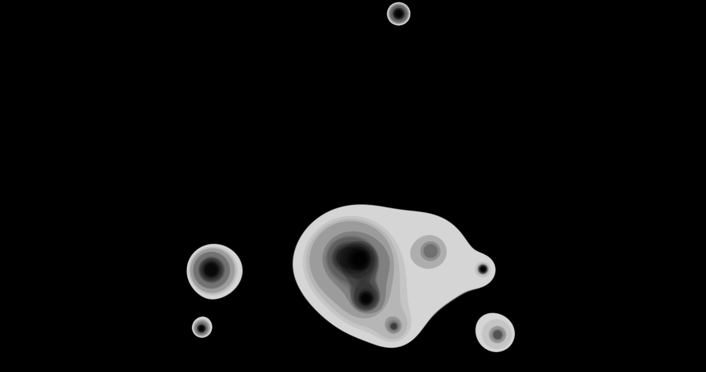

Experiment 3: Generative Methods
Imitate
I decided to imitate a procedural image I found online:
https://www.pinterest.com/pin/363665738674949008/
I liked the image, and it seemed like I could make it in p5.js. The patterns reminded me of the ones created by the golden ratio in math, so I used it in my recreation:
https://editor.p5js.org/coco558/sketches/g3J2AyOBY
I used the golden ratio to rotate ellipses around a point. I used the Pythagorean theorem to space and flatten the ellipses properly as they wrapped around the sphere.
Integrate
I decided to Mix the movement on the metaballs example on slide 13 of the animation and interactivity lecture.
in my integration, the spheres from my imitation bounce around the canvas. I also used the rotation we talked about in class to make them slowly spin. Whenever a ball hits a wall, its speed on the perpendicular axis to the wall reverses. The spin is also re-randomized on collisions.
https://editor.p5js.org/coco558/sketches/-wT1VJMwj
Innovate
For my innovation, I thought that it would be interesting if the spheres collided with each other. To do this, I revamped some old physics calculation code I had made, and I improved it significantly by making the energy level of the physics system consistent even over long timespans. I tested this by speeding up the simulation by 100 times and leaving it for a while to check that the total energy didn’t change. The physics code itself is relatively simple. The general idea is that on a collision, the velocities of the balls are split into the part pointing toward the other one and the part perpendicular to that. then the two balls swap the first part (the one towards the other ball). Here is the initial version of the simulation:
https://editor.p5js.org/coco558/sketches/aggdyBgid
and here's the final version with my imitation combined with it:
https://editor.p5js.org/coco558/sketches/-4367yTpd5
In the final version, I really liked how you could see the trails between the holes in the spheres. I was also surprised by how much better the spheres looked when they had colors. Because energy is fully conserved, the balls will bounce around forever, so it could make a cool screen saver or wallpaper.
Reflection
I worked on this project alone. I had a really good time looking back and reusing my really old code from high school and making something interesting with it. Generally, the coding was relatively easy but time-consuming, and the main issue I had was getting it to run relatively quickly. I hope that I have enough time to work on similarly complex things for future experiments because, although I spent a lot of time on it, it was really fun.